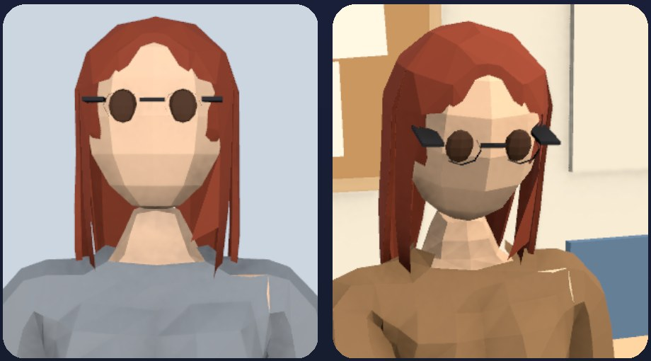
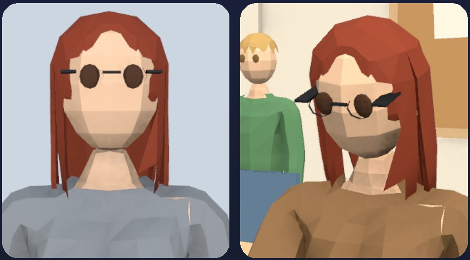
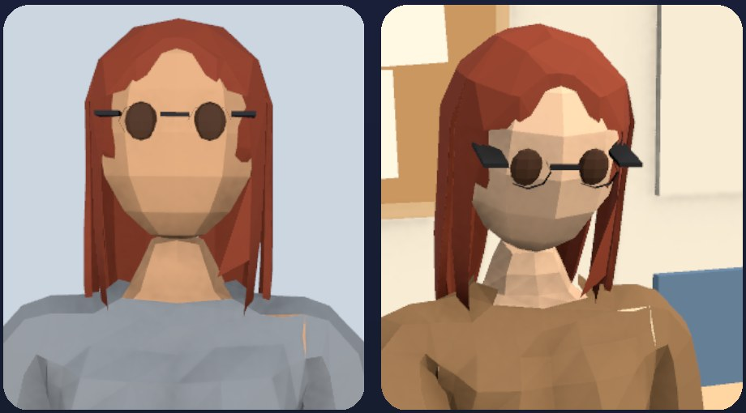
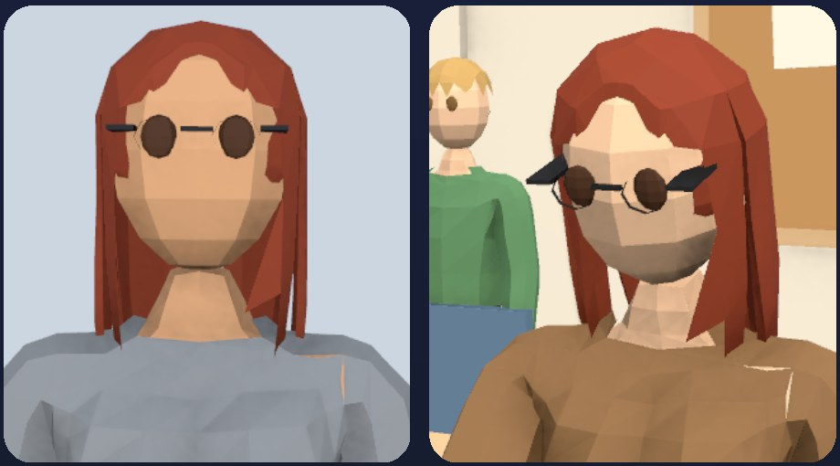

Admission Photo Check
At the door, the player compares the photo on a candidate's document with the person in front of them. This used to be four lines of words per side. It is now two pictures: the document photo, rendered from the photo's traits in a plain booth, and a live close-up of the actual student the room has walked to the door. Everything below is a capture of the real admission screen at 1080×2340 portrait. The photos were forced to each case on a fixed-seed career.
Verdict
Every impostor change is visible at phone size. Hair and glasses read at a glance. Eyes and skin need a real look, which is the judgement the door is meant to ask for. Two pairs are close enough that a player could miss them.
Haircut, hair colour, glasses
Obvious every time. These are the ordinary changes a genuine holder can show.
Eyes
The eyes are large painted discs. Green, blue and hazel stand apart. Brown against hazel is the subtlest, more so behind glasses or on darker skin.
Skin, most pairs
Medium against tan, tan against dark, and anything two steps apart are clear.
Skin, light against medium
The weakest case. The photo's even light and the room's warm light shift both tones a little. It reads, but only if you compare the lit cheeks.
The screen

- Document photo. Head and shoulders, dead on, an even frontal light, a pale backdrop. The sitter always wears the same grey top, so clothing never enters the comparison. Rendered once per face and cached.
- At the door. A live camera on the real student standing at the door, about 20° to the side and a little above eye height, lit by the room. The player sees them walk into frame.
- The rest of the card is unchanged. The "Photo" row keeps its label and the pictures replace its two value cells. When nothing can render (tests, headless) the card falls back to the old words.
- Still on screen: the line under the name repeats the person's look in words. This slice left it alone, and it gives the comparison away. See the open questions.
Genuine
The photo matches the holder. Different angle and light, same face.


Drifted photos
The holder, photographed before one ordinary change. A question, not an answer: the face still matches.


Impostors: eyes
Somebody else whose eye colour differs from the holder's, sometimes with a restyle on top.


Impostors: skin
Somebody else whose skin tone differs from the holder's by one step.


One tweak: the close-up looks at the lit side
The room's sun lights one side of the face. The first close-up looked from the other side, which turned a light face grey and a medium one tan, so skin could not be compared fairly. The camera now looks from the lit side. Same student and photos before and after.




Open questions
- The look in words, under the name. The identity card still prints "long auburn hair, brown eyes, light skin, glasses". With pictures on the card, that line turns the check back into reading. Recommendation: hide it when the pictures show.
- The queue behind the person. The next candidate in line sometimes stands in the background of the close-up. It reads as a corridor, but a second face in the frame could confuse. A tighter framing would remove it.
- Light against medium skin. It is the smallest step in the skin palette. The steps could be evened out, which also changes how everyone looks in the room, or it could stay as the hard case. A device playtest should decide.
- Cost on the phone. The close-up renders the room a second time while the door is open, at 320×400 with no shadows. That has not been measured on the Galaxy A15 yet. The main camera still draws the full room under the opaque card, and switching it off at the door would more than pay for the close-up.